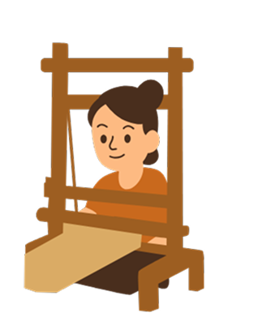
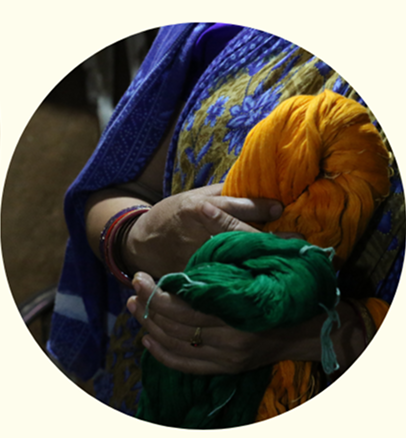
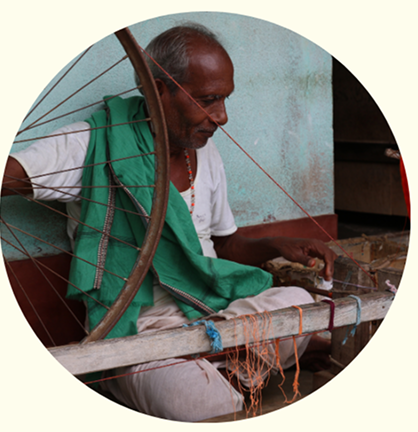
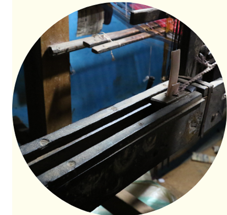
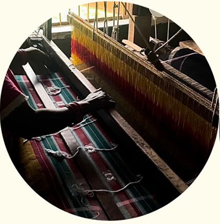
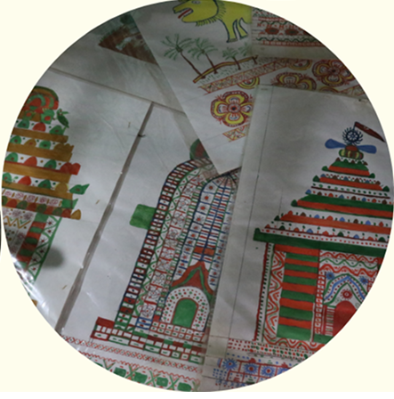
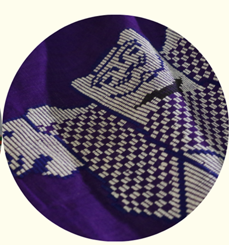

The Weaving Process
Celebrating the timeless artistry of Dhalapathar Ikat – A heritage of Odisha

Weaving Process
of the Dhalapathar Ikat
The unique and intricate weaving techniques of Dhalapathar textiles do not rely on modern tools like
jacquard, which would require 400-600 hooks. Instead, Dhalapathar weavers use a traditional method
involving wooden sticks called 'Chiari'. This rare technique includes a process known as shedding
and picking of an extra weft.
Raw Materials and Yarn Preparation
1. Yarn Selection:
The primary raw material is 100% cotton yarn, available
in counts like 26s, 40s,2/100s, and 2/120s. Traditionally, medium to coarse threads (e.g., 26s and
40s) were used, but
finer counts are now common for smoother textures. 2. Dyeing:
Earlier, natural dyes were used Karkacha mud for brown, Sagwan wood for red, and a
Harida-mango nut mix for black. These were boiled with soda ash and salt for fastness. Today,
azo-free synthetic dyes ensure vibrant, lasting colors suitable for curtains, table covers, and
wall hangings. 3. Sizing:
Sizing: For yarns like 20s or 26s, sizing is essential. Hanks are soaked in fermented rice water
for 2-3 days. The weaver applies pressure to turn the mixture into a paste that coats each
thread. The yarn is then squeezed and shade-dried over bamboo rods, with threads separated by
tension.


Winding and Bobbin Preparation
- The treated yarn is wound using a charkha into:
- Bobbins for warping
- Pirns for regular weft insertion
- Small palm hanks for extra weft work (especially in decorative pieces)
- This ensures the yarn is ready for efficient, uninterrupted weaving.
Loom Setup
All weaving is done on fly shuttle pit looms, traditionally designed with:
- Width: 80 inches
- Length: 42 inches
- Height: 6 feet
- Pit depth: 18 inches


Shedding and Picking
Chiaris (Wooden Slats):
These flat wooden sticks (60" × 3" × 0.25") form the shed for decorative
motifs. The number of chiaris used varies by design complexity.
Picking:
Ordinary handloom shuttles are used for ground weave. Extra weft yarns, wound into small
hanks, are inserted manually to develop intricate multicolor patterns.
Figuring and Design Techniques
- Create multicolor weft ribs using heavyweight yarn in shedding with chiaris.
- Intensity and Design: Adjust the number of chiaris based on the design's complexity.
- No Sizing Required: Mercerized cotton yarns don’t need sizing due to their strength.


Raw Materials and Yarn Preparation
- After weaving a small length, rotate the cloth beam and unwind the warp beam simultaneously.
- Tension Adjustment: Maintain tension on both beams using specific arrangements.